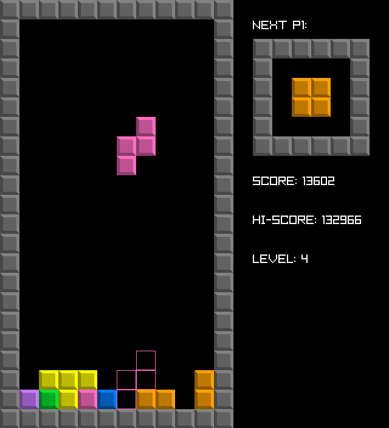
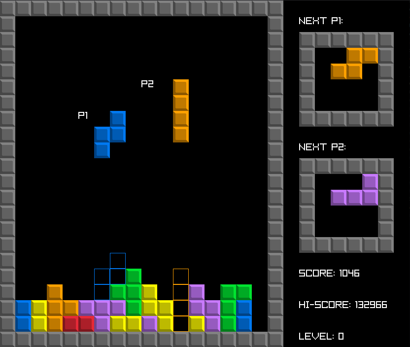
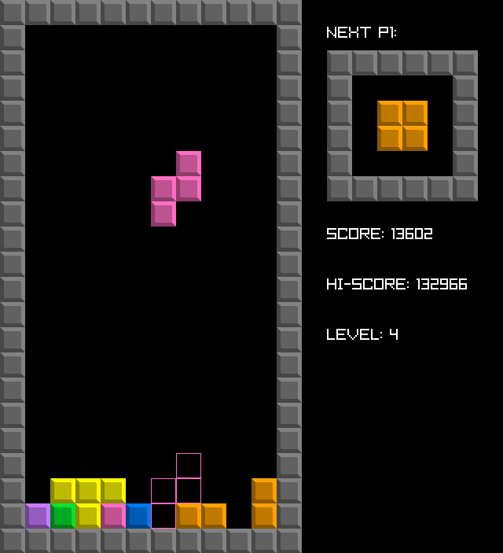
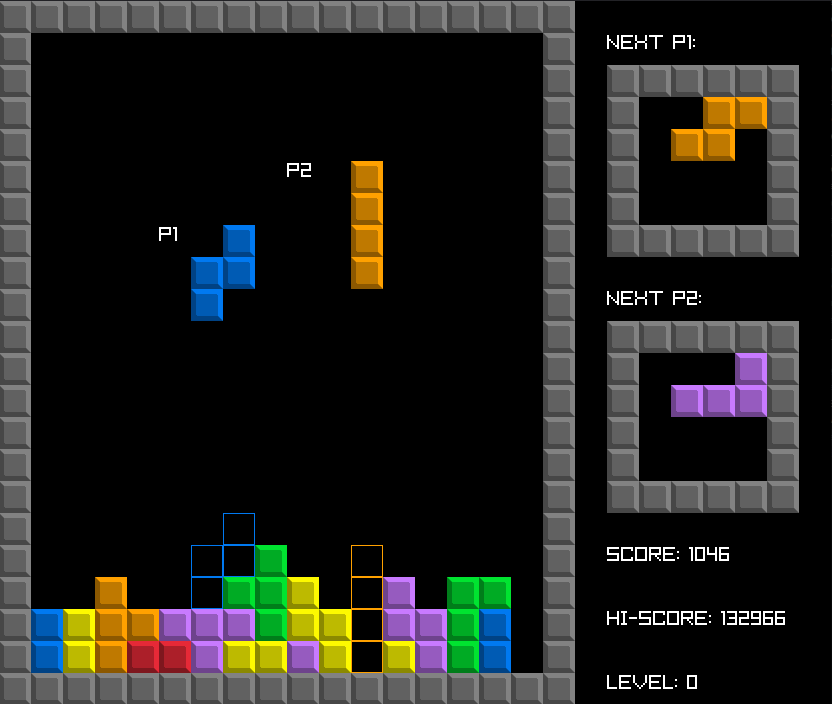

Block Placer

About
Block Placer is a game heavily inspired by Tetris. It is made with C++ and Raylib and I used this project to transition from using SFML to Raylib. It served its purpose well and I learned the foundations of Raylib. I found that Raylib is way easier to use than SFML and just as useful if not more. This is a great project for a beginner to make as it teaches a lot about game design and logic.
Features
Different game states are handled with a state handler. Unlike most Tetris clones, this one features 3 playable modes - solo, co-op and versus. This is what I'm most proud of. In co-op mode you can play with a friend on a larger map or challenge yourself to control two tetrominoes at the same time - both are extremely fun to do! But if you're more on the competitive side then you can challenge your friends in versus.
Playing with friends is really fun, but you can't always do it on a single machine like this game requires. That's why I might come back to this in the future and learn how to implement networking to let players play with each other around the world.
Play
The game is available completely for free on Linux and MacOS. It is open-source and available on Github under MIT License.
Link to Github
Link to Itch.io
Gallery
 


